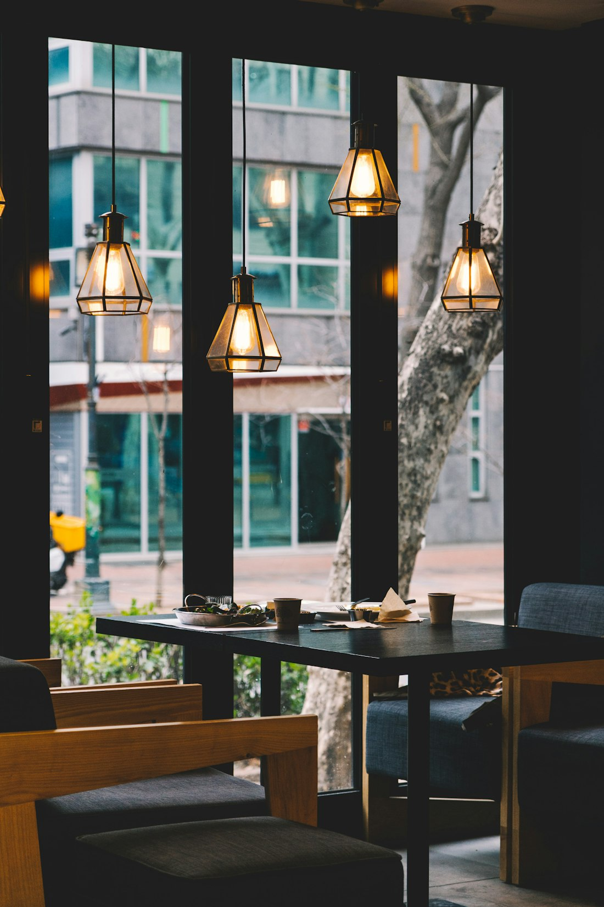

About
三田駅からほんの数歩。暖色のペンダント照明が灯る店内は、騒がしくなく、されど孤独でもない。カウンターひとりでも、大切な人との夜でも、気づけばいつもここに座っている。そんな居心地のいい「行きつけ」を目指しています。
季節が変わるたびに仕入れを見直し、旬の食材を丁寧に仕立てた一品料理と、兵庫の地酒を中心に揃えたドリンクで、三田の夜をゆっくりとお過ごしください。
Party & Reservation
歓送迎会、職場の打ち上げ、同窓会、誕生日会——人数やご予算に応じてご相談ください。飲み放題プランのご用意や、お料理内容のカスタマイズにも柔軟に対応しております。前日までのご予約をおすすめしております。
スタンダードコース
全●品＋飲み放題●●分 / ●名様〜承ります
お一人 ●,●●●円〜
プレミアムコース
全●品＋飲み放題●●分
旬の特選食材を使ったコース仕立て
お一人 ●,●●●円〜
おまかせコース
ご予算・人数・アレルギーをお知らせください。シェフが当日の食材で組み立てます。
ご相談のうえ決定
Reviews
三田に来るたびに必ず寄ります。カウンターでひとりでも居心地がよく、大将との話も楽しくて。日本酒のラインナップが季節ごとに変わるので、何度来ても飽きません。〆のラーメンで締める流れが完璧すぎます。
職場の歓送迎会で貸切利用させていただきました。コース料理が本当においしく、お刺身の盛り合わせには皆が歓声を上げていました。スタッフの方の気遣いも細かく、幹事として大助かりでした。また必ず利用します。
駅前でこんなに落ち着いた雰囲気のお店があるとは知りませんでした。暖かい照明と木の温もりがあって、日常の疲れをほぐしてもらえる感じ。焼き鳥と地酒の組み合わせがたまらないです。三田の宝です。
Access
三田駅から徒歩約2分
Hours & Contact
| 曜日 | 営業時間 | 備考 |
|---|---|---|
| 月〜金 | [要確認] | |
| 土・日・祝 | [要確認] | |
| 定休日 | [要確認] |
TEL
[電話番号を入力]
ご予約はお電話にて承っております。
大人数・貸切のご相談もお気軽にどうぞ。